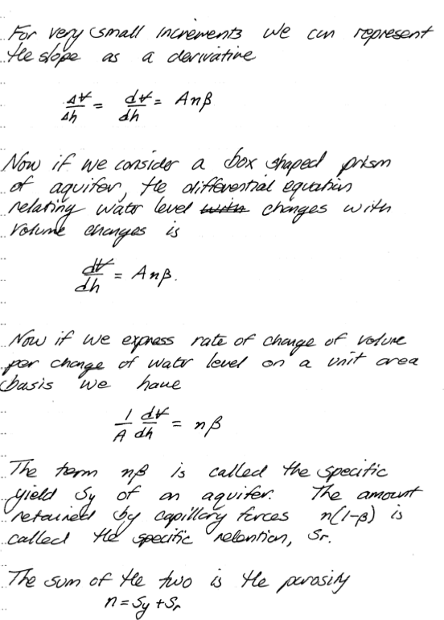

Aquifer Properties - II (pp. 93-109)¶
Aquifers¶
Water Table
Before our journey into the fascinating world of aquifers and their kin, we need to define a water table, which is the the locus of points in a porous medium where the pore water pressure is equal to the atmospheric pressure (pg. 98). One particularly important type of aquifer is a water table aquifer.
Some useful heuristic guidelines regarding water table behavior are:
In the absence of groundwater flow (discharge, recharge, reversed charge), the water table will be flat (no meaningful gardient)
A sloped water table indicates that groundwater is flowing
Groundwater discharge zones tends to be in topographic low spots
The water table shape often mimics the surface topography (unless engineers have their way!)
Groundwater tends to flow away from topographic high spots and towards topographic low spots, but not always
Aquifer
Water-bearing geologic unit, tends to be of large areal extent. Will have many different point values of \(K\), for engineering usually need to express some “average” value. The arithmetic mean is not usually useful, in part because \(K\) is not normally distributed (or even symmetrically distributed; negative values are meaningless), typically the median and geometric mean are used.
Note
Geometric mean is determined by logartihmic transformation of the inputs:
such that the geometric mean is
Confining Layer
Aquifuge
Aquitard
Unconfined Aquifer
Aquifers close to the surface with materials of high intrinsic permeability extending downward from the surface to the base of the aquifer are called unconfined (or water table aquifers)
Confined Aquifer
Aquifers overlain by a confining layer or formation are called confined aquifers. Confined aquifers are called artesian aquifers when the piezometric head (pressure head) in the aquifer is sufficient to lift water to the surface without addidional inputs of energy (a flowing well).
Storage¶
Storage is the term used to describe how much water is contained in an aquifer.
There are three principal mechanisms of storage always present, but of differing relative contribution:
draining/filling of the pore space, and
compression/decompression of the water, and
compression/expansion of the solids structure.
Three terms related to these mechanisms are:
porosity (specific yield), and
bulk compressibility of water, and
bulk compressibility of the solid structure.
Unconfined Aquifers primary storage mechanism is draining/filling of the pore space in the vicinity of the free surface. The other two mechanisms are relatively insignificant, even at large scales.
Confined Aquifers primary storage mechanisms are compression/expansion of the solids structure and compression/decompression of the water.
The term matrix compressibility refers to the phenomenon where the solids rearrange so that matrix porosity changes with changes in head. Draining/filling of pore space is insignificant (as long as the aquifer remains confined the same volume of aquifer is saturated)
Storage Mechanism Algebra¶



Effective Stress and Compressibility¶
Effective stress (solids pressure) is a term used to describe the load per unit area carred by the solids matrix in a porous medium.
Consider a unit block of aquifer as above. The total load on top of the block is supported in part by the solids structure and in part by the water (bouyancy). From a static force balance we have:
where \(p_T\), \(p_l\), and \(p_s\) are the total, liquid, and solids pressures (normal stresses).
When water is removed or added to the blaock the total pressure (overburden) is unchanged so the variation in the liquid pressure is equal and opposite to the variation in solids pressure (effective stress).
The variation in head in the block is directly related to variation of liquid pressure as the block is assumed to be fixed in space so we have:
From this concept we can define matrix and water compressibility terms.
Typically;
Matrix compressibility is
where \(b\) is the unit thickness. Combining this concept with water compressibility defines the confined aquifer specific storage coefficient as
where
Transmissivity¶
The ability of an entire thickness of an aquifer to convey water is called the transmissivity and is usually just the product of storage coefficient and hydraulic conductivity.
Water Table & Potentiometric Maps¶
Elevation of water level in wells or piezometers is the pressure head. The sum of the pressure and elevation head (well screen levels are known) is the hydraulic head.
These maps have maps have many uses
determine regional flow direction and magnitude
estimate storativity
estimate pollutant transport
Map Application Determine Storativity¶


Map Application Determine Regional Flow¶
Homogeneity and Isotropy (pg 108)¶
Homogeneous means property is same in all locations; the opposite is heterogeneous.
Isotropic means property is same in all directions; the opposite in anisotropic.